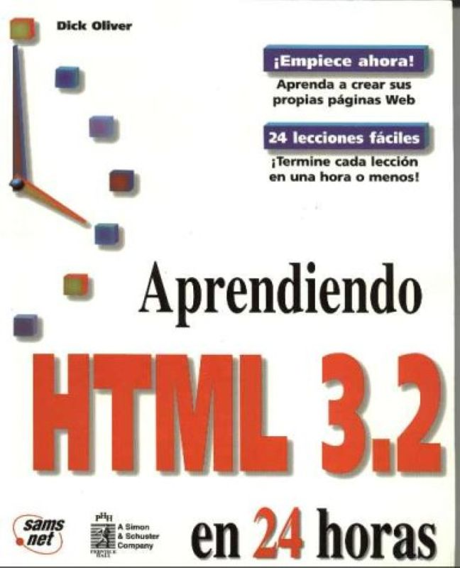
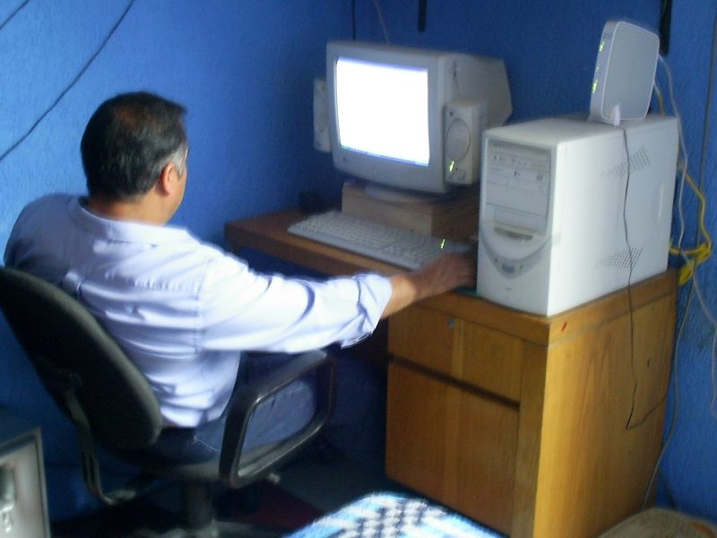

Informática
17 de Agosto, 2025
Era realmente genial la época en la que tenía tiempo suficiente para sumergirme en los videojuegos.
No tenía ninguna preocupación mas que seguir avanzando en alguna de esas historias. Me parece que
podría definir con claridad la época en la que más disfruté de ese pasatiempo. Fue desde mi entrada
al CCH al rededor del año 2001, hasta que me vine a vivir acá con Pá en el año 2008. Pero empezaré por el
principio.
Mi primera PC
Aunque ya llevaba años siendo un asiduo videojugador, mi época en el CCH, me dio la libertad de jugar
un poco de todo, además de poder destinar el tiempo que quisiera para jugar. La computadora verde que tuve en aquél entonces, fue la que
me permitió experimentar muchos videojuegos, que ya poco o nada tenían que ver con lo que estábamos acostumbrados
en las consolas, fueran de sobremesa o portátiles.
Hasta ese momento sólo había jugado juegos de Nintendo y uno que otro de MS-DOS. Pero con esa computadora
conocí todo tipo de juegos, tanto de PC como de Play Station gracias a los primeros emuladores que encontré en internet.
No me acuerdo específicamente de todos sus componentes, pero sí puedo recordar que su procesador era un K6 de AMD
con una velocidad de 500 Mhz, 64 MB de RAM, y un chip gráfico que podía configurar entre 8, 16 y 32 MB de memoria para video.
Cuando descubrí que mediante el BIOS podía manipular algunas opciones para mejorar el rendimiento, subí la memoria de video, de 8 a 16 MB.
Entonces empezaron a ejecutarse mejor los juegos. De hecho cuando conseguí un módulo adicional de RAM de 32 MB (no sé de dónde), pude
subir la memoria de video hasta los 32 MB. Lo cual fue genial porque pude acceder a más juegos que antes no corrían.
Pero aprendí una valiosa lección el día que decidí tocar la frecuencia del procesador. La subí hasta los 550 Mhz con la esperanza de que esa
velocidad extra se reflejara en un mejor rendimiento en juegos. Y así fué, hubo una notable mejoría, pero no duró mucho.
A los dos días la computadora se apagó y ya no volvió a encender. Yo no entendía por qué, y por más que le buscaba
no podía encontrar la causa. Contacté a Fernando, el amigo de Paco, se llevó la computadora, y poco después me contactó para
decirme que se había quemado el procesador, y que iba a necesitar otro. Ya no recuerdo quien pagó por esa compostura, si
Tavo, Paco o Chepo, pero me parece que fue Tavo.
En fin, le pusieron un procesador más potente, me parece que ya era uno con 700 Mhz de velocidad, así que volví a las andadas
pero esta vez, con mucho más cuidado.

Un tiempo sin computadora
27 de Noviembre, 2025
Desde que dejé de vivir en casa de Mima, pasé un tiempo sin computadora.
Iba constantemente a los laboratorios de computo del CCH a experimaentar
todo lo que iba a prendiendo, desde programación en Turbo Pascal, hasta
diseño web en HTML.
El hecho de no tener PC me hizo enfocarme en aprender. Pasaba las horas
leyendo un libro de HTML que saqué tantas veces de la biblioteca del CCH,
que terminé por aprenderme de memoria muchos de sus capítulos. Fotocopié
casi todo el libro, y aun tengo guardadas esas copias. Luego
escribía en un cuaderno todos los códigos que iba aprendiendo. Aún conservo
ese cuaderno, lleno de anotaciones y diseños para una página web personal.
También conservo los archivos y son totalmente funcionales en un navegador
moderno. Todo esto fue antes de que se estandarizara el CSS. Hoy en día
ya quedaron obsoletas muchas de las cosas que aprendí de ese libro.
Se llamaba "Aprendiendo HTML 3.2 en 24 horas", del autor Dick Oliver.

Aprendí mucho en esa época, y vivia esperando el día en que pudiera
tener mi propia computadora de nuevo. Mientras tanto, me gustaba ver como tú
jugabas Halo y Return to Castle Wolfenstein, en tu flamante PC Pentium 4 y
tu super monitor LG Flatron de 17 pulgadas. Se veía espectacular para la época.
Fíjate que a pesar de no tener PC, no vivía frustrado, al contrario,
me concentré tanto en aprender, que pasé muy buenos momentos en la biblioteca
del CCH o en sus laboratorios de cómputo. Lo que sí me frustraba era no tener
una consola para jugar. Pero bueno, eso ya es parte de otra historia, jejeje.
Mi segunda PC
27 de Noviembre, 2025
Cuando Pá y yo nos mudamos a Iztapalapa, hubo oportunidad de armar
una PC muy modesta, así que escogí cuidadosamente cada componente.
El resultado fue una computadora que, si bien no era una maravilla,
me sirvió muy bien para practicar mi HTML, programación en Turbo Pascal,
y por supuesto, para jugar algunos videojuegos. Era realmente poco
lo que podía jugar con una computadora tan modesta, tenía un procesador VIA C3
soladdo a la motherboard. No recuerdo la velocidad, pero era muy baja,
y sólo tenía 128 MB de RAM. Pero la aproveché al máximo. Fue la primera
PC que usé con internet de banda ancha, así que pasaba horas navegando y bajando
todo tipo de cosas.
Sólamente tengo una foto de esa computadora, y eso porque se la tomé a Pá
un día que le estaba enseñando a usarla.
